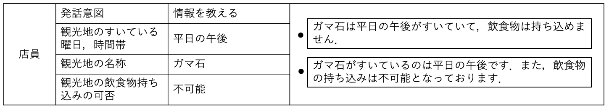
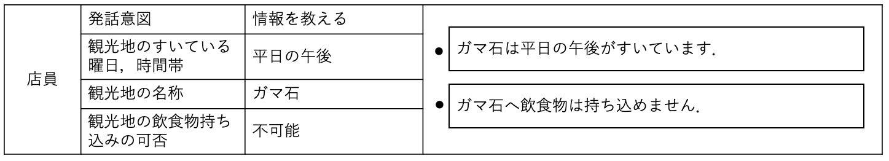

作業概要
旅行代理店における店員（カウンターセールス）または客の，どちらかの発話（話す言葉）を作成していただきます．作業内容は，指定される「どういう意図で発話しようとしているか」および「発話に含めたい情報」を全て含んだ発話を作成する，というものです．
※ 作業時間は40分程度と予想されます．
※
本ページを再読み込みすると，それまでに入力された情報はすべてリセットされますのでご注意ください．
対話状況
- 旅行代理店で客（ユーザ）と店員（システム）が会話している
- ユーザは，訪れる観光地を候補として2箇所決めており，そのどちらに行くかをシステムと相談して決めたい
- システムは，2つの観光地の見所などを説明したり，ユーザからの質問に答えたりしながら，観光地を決める手助けをする
作業
1-1. CrowdWorksでのワーカーID・表示名を入力してください
Worker ID：
表示名：
2-1. 2つの対話を作成してください
以下のガイドラインと注意事項によく目を通してから，本ページ下部の表を埋めるかたちで作業してください．
ガイドライン
- 表の各行は，「発話者，発話の意味，発話文」からなっています．
- 「発話者」の列には，客（ユーザ）と店員（システム）の内，どちらの発話であるかが示されています
- 「発話の意味」の列には，あなたが作成するべき発話の意図や情報が示されています．
- 「発話文」の列に言い方の異なる2種類の発話文
を考えて，2つの入力欄それぞれに記入してください．
発話文としては，「発話者」が「発話の意味」を伝える際に想定されるような文章を考えてください．
発話文を作成する際の注意事項
- 実際の旅行代理店で想定されるような，できるだけ自然な発話文を作成してください．
- テキスト文ではありますが，対面で対話していることを想定した発話文を作成してください．
- それぞれの指定する情報に従って2種類の発話文を作成していただきます．発話の内容は同じまま，口調や表現，伝え方を変えることでバリエーションのある発話文を作成してください．発話の丁寧さは旅行代理店における対話において不自然でないと考えられる範囲で自由に設定してください．
- 「どういう意図で発話しようとしているか」および「発話に含めたい情報」の指定が20個並んでいますが，それぞれ前後との関係は無いものと考えてください．
- 作成していただく発話は，その前（過去）に指定に応じた適切な文脈があると考えていただいて大丈夫です．
- 発話文に含めてよい記号は句読点だけです．句読点以外の記号（！，？，～など）や絵文字は含めないでください．
- 「発話に含めたい情報」が複数指定されていることがあります．その際は，1つの発話だけで全ての「発話に含めたい情報」を含んでいるような発話を2つ作成する必要があります．
2-2. 作成した発話データをダウンロードして，CrowdWorksで提出してください
表の下方に設置されている
ダウンロードをクリックすることで，入力された発話データをCSV形式で1対話分ずつダウンロードすることができます．ダウンロードした発話データをCrowdWorksの作業ページで提出してください．
対話データの提出に関する注意事項
- ダウンロードされるCSVファイルは文字コードの関係上文字化けしている可能性がありますが，問題ありません．
- 1度ダウンロードされた対話データのファイル名やファイルの中身は編集しないでください．
- ダウンロードボタンをクリックしても対話データをダウンロードできない場合，全てのフォームが正しく入力されていな可能性があります．上記1-1.~2-1.の作業が正しくできているかを確認してください．
良い例

悪い例

上記全ての作業が正確に行われていることが確認でき次第，CrowdWorksにてお仕事を承認し報酬をお支払いします．ただし，作業がインストラクション通りに行われていない場合や，明らかに対話の流れに沿わない発話や無関係な発話が確認できた場合は，不適切とみなし非承認とすることがありますのでご注意ください．